Permit Route Pro tutorial
Learn the app, one step at a time.
Start with the basics: add a permit, check the route, and drive it. The rest of the app is explained after that. Select any picture to see it full size. The same tutorial is in the app under My Account → Help & Support → App tutorial.
The app is in alpha. Check the current state coverage, and always follow your issued permit if it differs from the app.
Part 1: The basics
Add a permit, check its route, and drive it.
1. Add your permit
- On Home, tap Upload PDF and pick your permit. The original PDF works best because its text is clearer than a photo.
- Scan Permit takes photos with your camera. From Gallery uses photos you already took.
- Add every page of the same permit. Add a different permit separately (see Trips with more than one permit).

2. Or open the permit from your email
- In your email, tap the permit PDF attachment.
- When Android asks which app to open it with, tap Permit Route Pro, then Just once or Always.
- Choose Start a trip to collect several permits for one trip, Add to your trip if you already started one, or Open as a single permit.

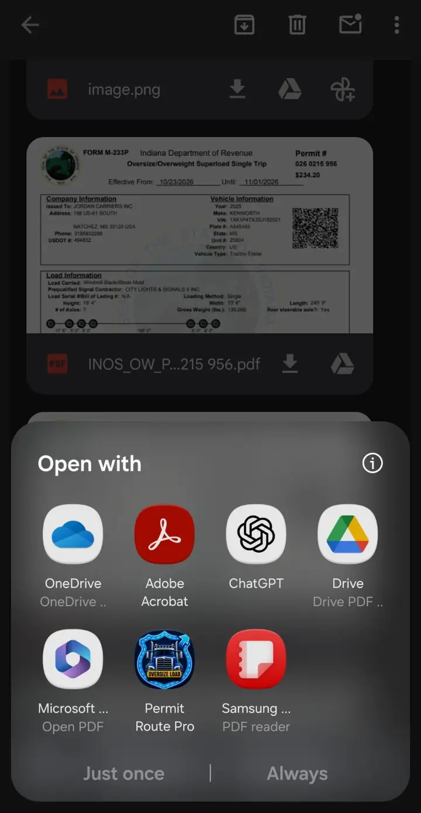

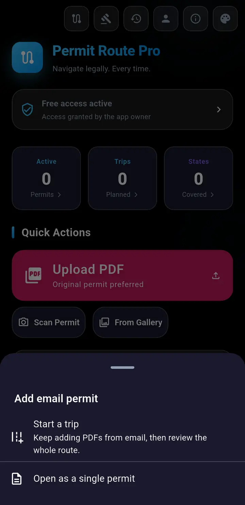
3. Let the app read the permit
- The app reads the permit and finds the route. This can take a minute.
- The screen may look frozen while it works. That is normal.
- If reading fails, tap Try again or choose another PDF.

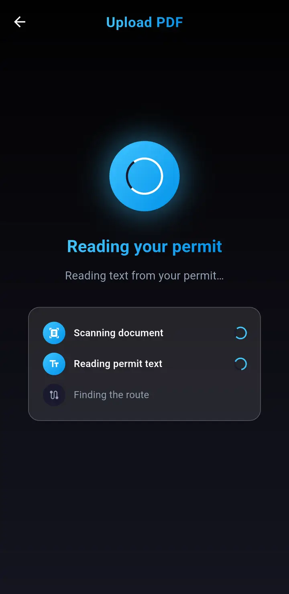
4. Check the route against your permit
- Verify Route shows your original permit at the top and the route on a map below it.
- The numbered pins are the route points in order: 1 is the start and the highest number is the end. After you confirm, the start turns green and the end turns red.
- Tap the square button on the map to make it full screen. Pinch to zoom in.
- Compare every road, turn, and the order with your permit. If they differ, your permit is right.


5. Fix anything that is wrong
- Route Review lists each point in order. Tap the pencil to fix a point: type the exact words from your permit, then tap Save & Re-geocode.
- Tap the trash can to remove a point, or ADD to add a missing one. You can also drag a pin on the map, then tap REBUILD ROUTE.
- Permit text shows the words the app read. Tap ? for help.
- Some states send an official route. Those routes are locked and cannot be edited.

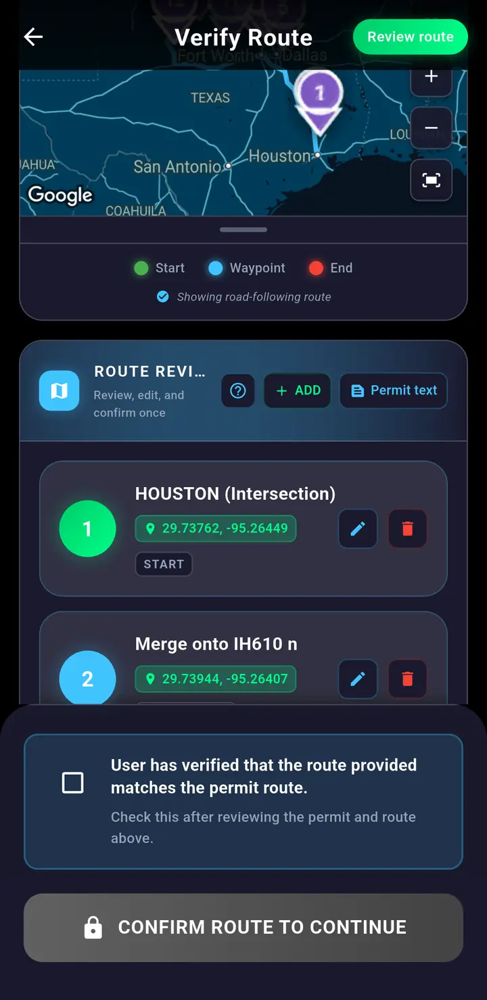

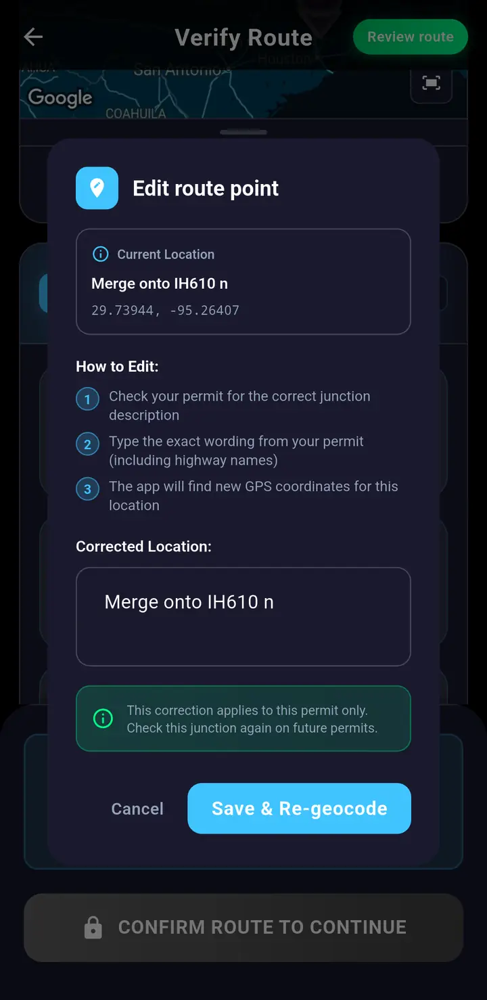
6. Confirm and accept the route
- When the route matches your permit, tick the box that says you verified the route.
- Tap ACCEPT ROUTE & NAVIGATE. The app saves an audit record (a locked copy of the route you accepted and when), then starts navigation.
- Inside a trip the button says Verify permit instead. You start driving later from the trip.

7. Drive with navigation
- Top: your next turn and how far away it is.
- Bottom: time and miles left. Tap the ⓘ button for trip details. Tap End to stop navigating.
- Bottom left: your speed.
- Right side, top to bottom: compass, zoom in, zoom out, voice on or off, settings (gear), lock, center on me, and the red ! to report a road problem.
- While parked, press and hold a button to see its name.
- Lock keeps the map on your truck. Unlock it to look around, then tap center on me to come back.

8. The compass, made simple
- The compass is the round button with the red arrow, at the top right of the map.
- The red arrow always points to north. That is all it shows.
- Tap the compass to switch how the map turns:
- Heading up (the normal setting): the road ahead is always at the top of the screen. The map turns as you turn, and the red arrow moves to keep pointing north.
- North up: north is always at the top, like a paper map. The red arrow points straight up.
- Example: in the right picture the truck is driving east, so north is on the left and the arrow points left.
- Tapping the compass also puts the map back on your truck.

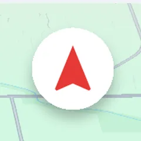

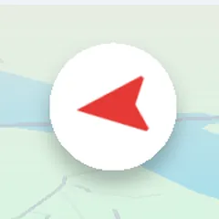
9. The wind dial
- The round dial with N, E, S and W at the top left is for wind. It does not change the map.
- The arrow points the way the wind is blowing.
- While you drive, the dial says Travel up: the top of the dial is the way your truck is going. Arrow pointing down means wind in your face. Arrow pointing up means wind pushing you from behind. Arrow pointing left or right means a crosswind.
- When you are stopped it says North up: the top of the dial is north.
- The big numbers are wind and gust speeds in mph. Tap the dial for Wind & Weather. The small button on the dial shrinks it.

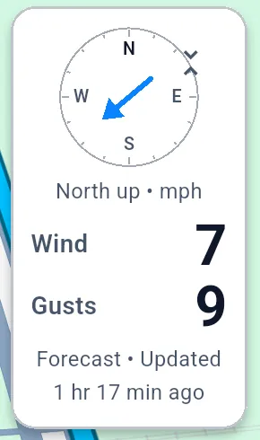
10. If you leave the route
- The top banner says Off route, an orange warning appears, and the voice says "Off route. Return to the permitted route."
- A straight orange line points from your truck to the nearest part of your permitted route. It is not driving directions; find a safe, legal way back to the route.
- When you are back on the route, the voice tells you.

Part 2: Everything else
Trips, tools, settings, and themes.
Trips with more than one permit
- Open Trip Planner (Manage Trips on some home layouts) and tap + to create a trip. You do not need a name; the app names it from the route.
- Tap Add Permit: Scan New Permit, From Gallery, Upload PDF, or Add Existing Permit. Or open each PDF from email and add it to the trip.
- Tap Review all permits and check each permit the same way as in Part 1.
- When every permit is verified, tap Review verified full route. Each colored line is one permit's route.
- Tap Start Entire Trip. At a state line, the banner offers to switch to the next state's permit.

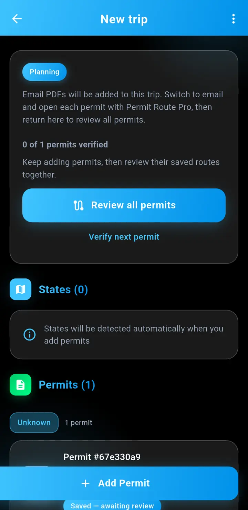

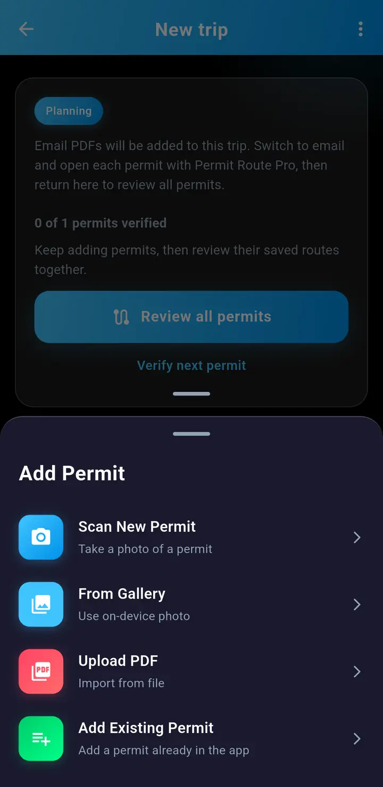

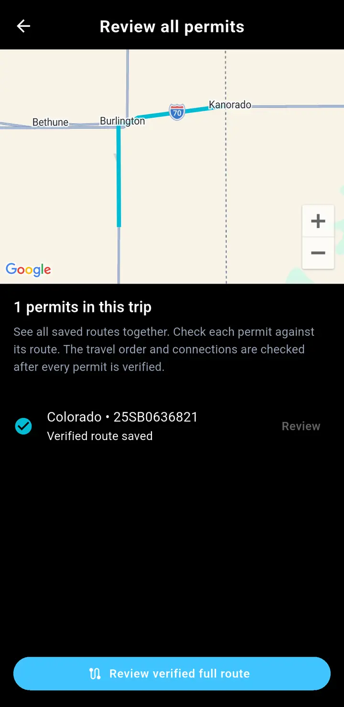

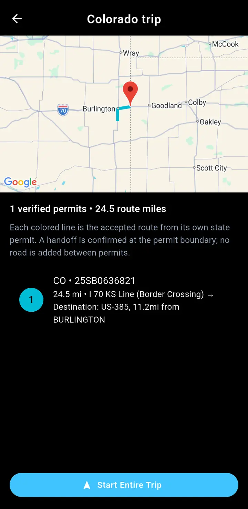
Your trips
- Trips lists your active and past trips. Tap Review trip to continue.
- A trip that already started shows Resume entire trip.
- To delete a trip, tap its trash can or swipe it away. The app asks first, and the permits stay saved.

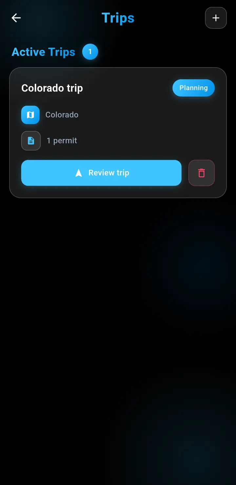
Navigation settings
- Tap the gear during navigation to change voice, lock, map mode (Dark or Light), camera distance, automatic turn zoom, your truck icon and colors, and the route line.
- My Account → Navigation Display has the truck icon and color, camera distance, automatic turn zoom, voice, lock, and North-up map. Map mode and the route line are only in the gear menu.

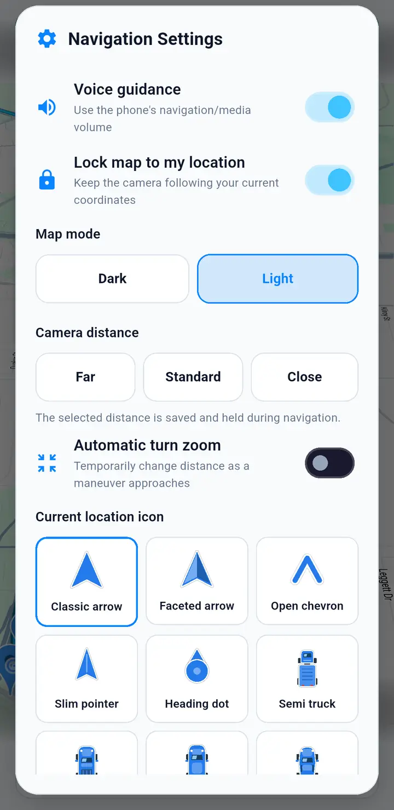

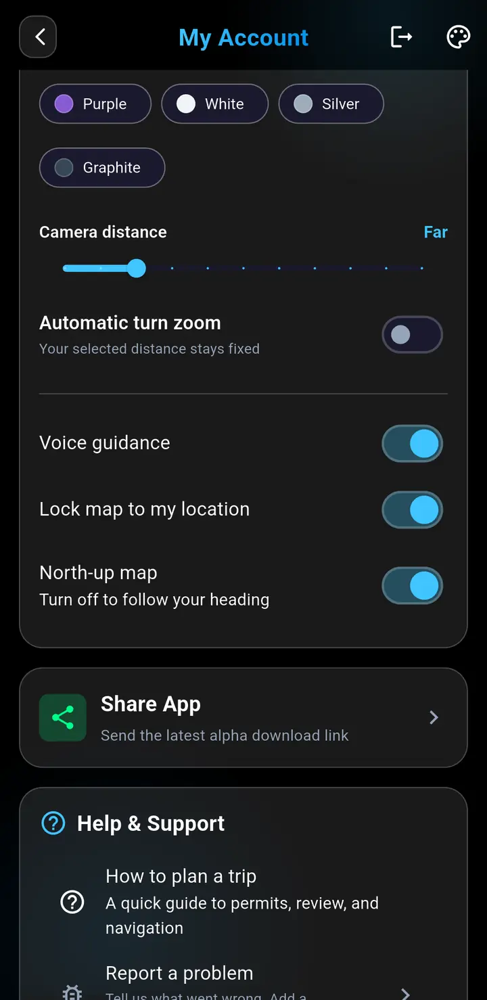
Report a road problem
- Tap the red ! during navigation and pick what you see, such as Route Blocked, Lane Restricted, or Work Zone.
- Your report warns other permitted-load drivers. It does not change anyone's approved route.
- Near a report, the app asks if it is still there: tap CLEARED or STILL THERE.
- Only touch the phone when it is safe and legal.

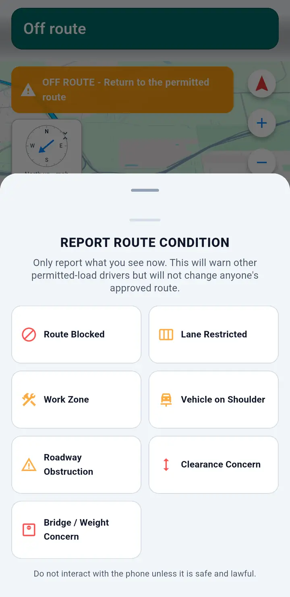
Permit History
- Every permit you added, grouped by state. Tap one to see details and resume navigation.
- Use the ⋯ button to delete a route. The clock button can remove old routes automatically. Audit records are always kept.

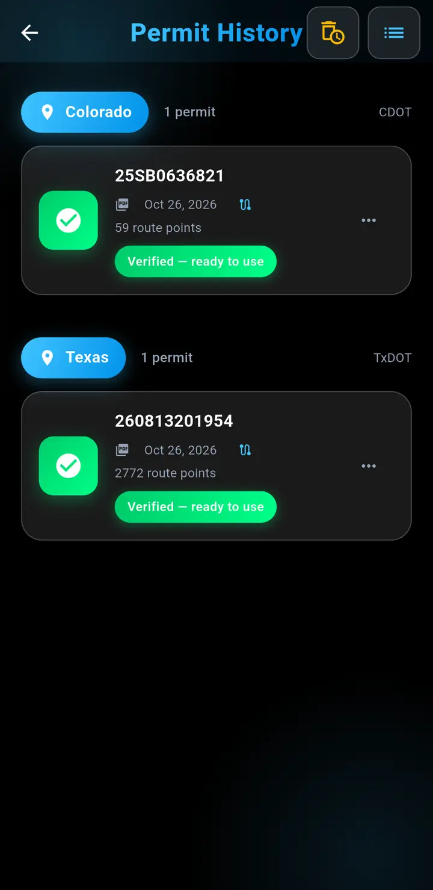
Audit Records
- One saved record for each route you accepted: the permit, the time, your device, and the route.
- Each record includes fingerprints (hashes) of the permit text and image, which tie the record to the original permit. Tap a record to view it.

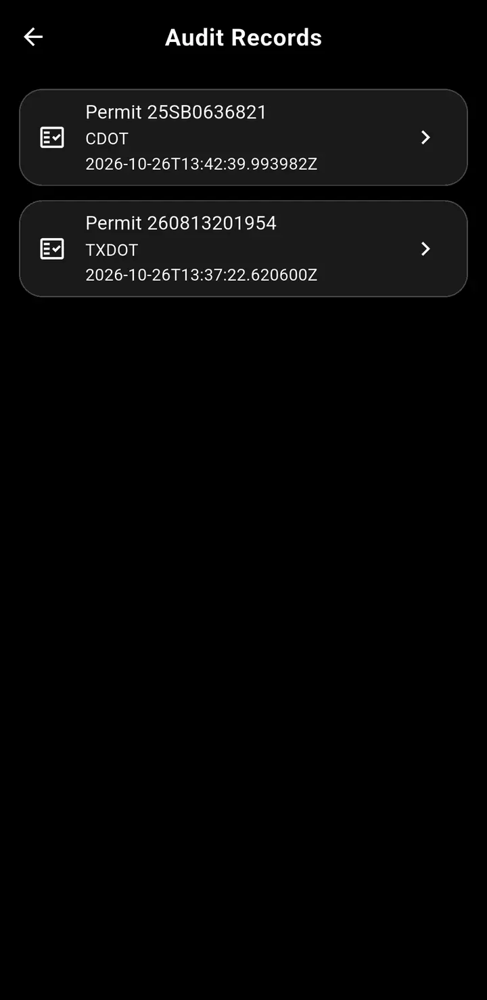
State Rules
- Escort and pilot-car rules for every state: when an escort is needed, signs and flags, equipment, insurance, and certifications.
- Search for a state or agency. Always confirm with your permit and the state.

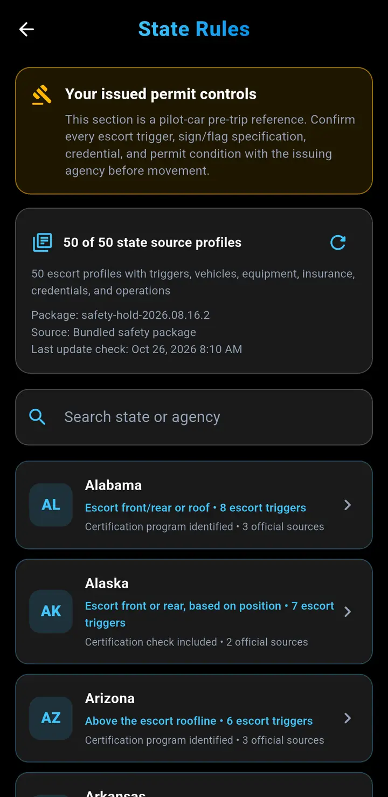
Sunrise & Sunset
- Sunrise, sunset, and twilight times for any date and place. Use GPS or search for a city.
- Useful for daylight-only travel rules.

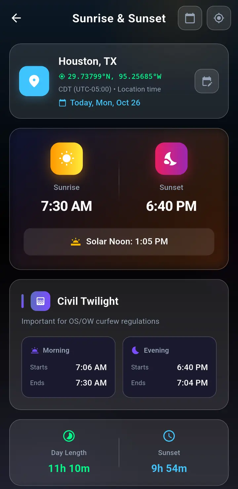
Wind & Weather
- Wind speed, gusts, and direction from the National Weather Service for where you are or any U.S. city.
- Readings refresh about every 10 minutes while the screen is open.

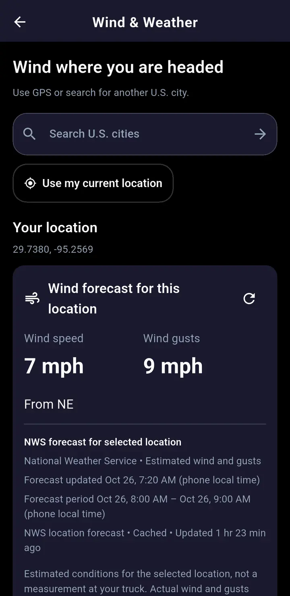
Themes
- Tap the palette button on Home, or go to My Account → Appearance.
- Tap a theme to select it, then tap Use and the theme name.
- Main themes: Original, Roadbook, Afterhours, Horizon, Field Notes, and Wayfinder. More are under Previous themes.
- A theme changes the colors and the Home layout. Your choice stays after app updates.


My Account
- Your profile, Appearance, subscription, Check for Updates, Navigation Display, Share App, Help & Support, and Sign Out.
- Subscriptions are handled through Stripe: Subscribe, Manage Subscription, or Refresh Access.
- One phone per account: signing in on a new phone signs out the old one.

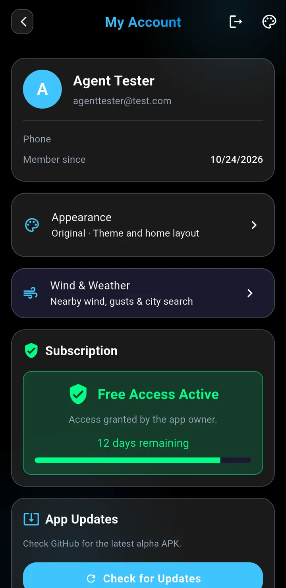
Share the app
- Show the QR code to another driver, or send the install link by text or email.

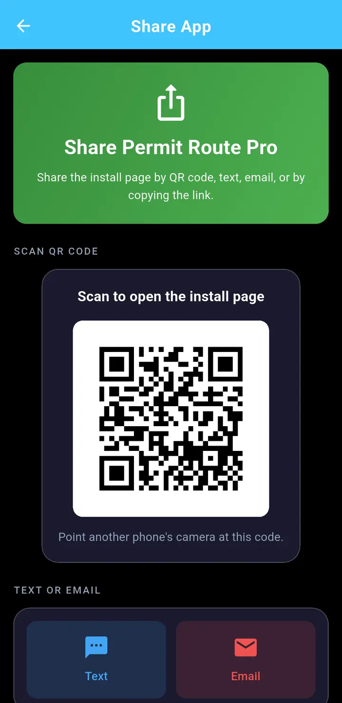
Report a problem
- My Account → Help & Support → Report a problem.
- Say what went wrong, add screenshots or the permit, and tap Send report.

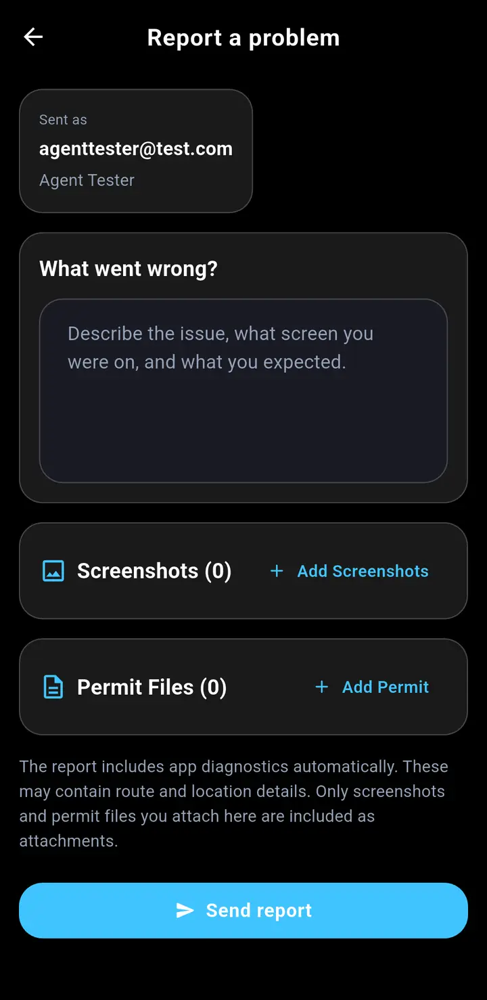
Updates and About
- Updates download and install by themselves while the app is closed, never during navigation. My Account → App Updates chooses Wi-Fi only or mobile data too; Check for Updates gets one right away.
- About shows your version and has Contact Support.

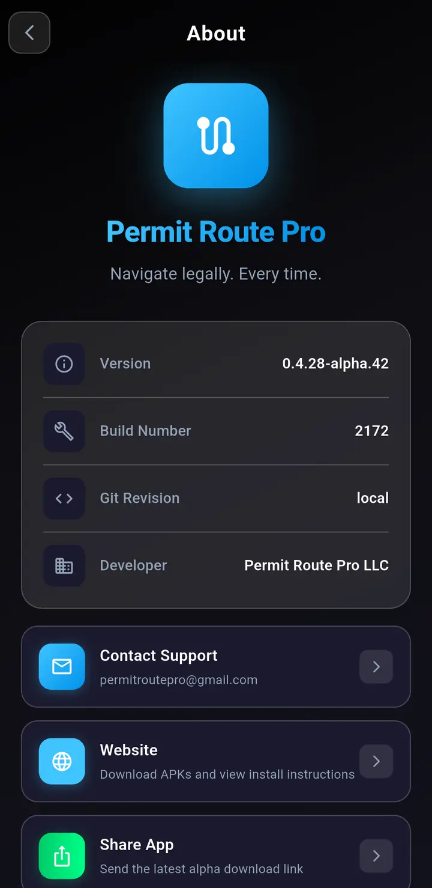
Ready to try it?
Permit Route Pro is distributed as an Android APK during alpha. Follow the installation instructions and begin with a test permit.
Install Permit Route Pro for Android